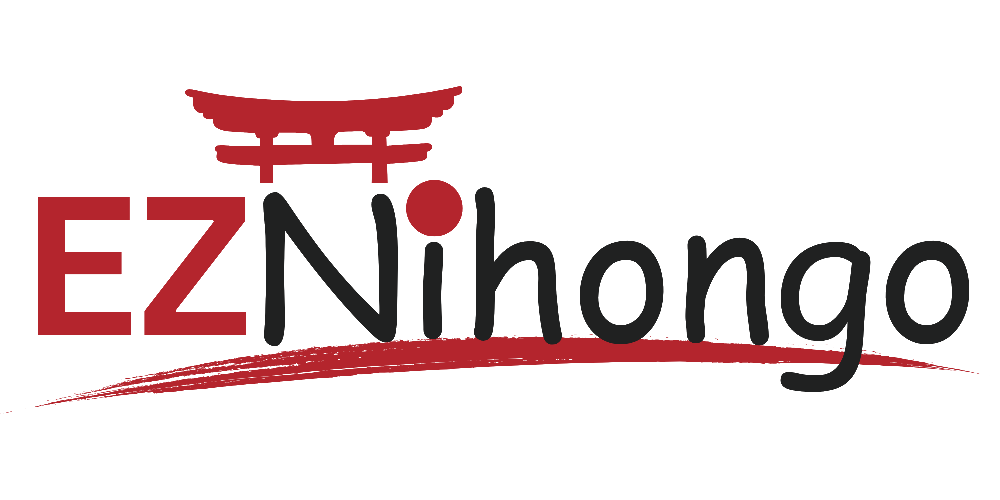

1/7
banyak yang belum tau…
Kerja ke
Jepang
tanpa agen?
BOARDING PASS · JALUR MANDIRI
JKT
TYO
PENUMPANG
KAMU
VISA
SSW
AGEN
—
GATE
N4
SEAT
01A
BISA!

eznihongo
geser dulu →
2/7
Syaratnya
cuma ini:
Usia 18+
ga ada batas atas resmi lho (perusahaan biasanya cari ±18–35)
Lulus SMA / sederajat
umumnya diminta perusahaan
Sehat jasmani & rohani
ada medical check sebelum berangkat
2 sertifikat
← ini yang paling penting. geser!
eznihongo
3/7
2 kunci
buat
berangkat
kunci #1
Tes bahasa Jepang
JFT-Basic A2
atau
JLPT N4
kunci #2
Tes skill SSW
Sesuai bidang kerja yang kamu pilih. Dua-duanya tes resmi & bisa diikuti di Indonesia.
eznihongo
4/7
Kerjaannya
kamu yang pilih
Perawat lansia
介護
Restoran
外食
Pengolahan makanan
食品
Pertanian
農業
Konstruksi
建設
Perhotelan
宿泊
Manufaktur
製造
Otomotif
整備
+ bidang lain!
eznihongo
5/7
Belajar di LPK
atau
online?
LPK
umumnya…
🏫 Tatap muka, kadang wajib asrama
⏰ Full-time, susah sambil kerja
💸 Paket biaya besar (sering sepaket penempatan)
fokus bahasanya
🎥 Live sensei 2×/minggu
⏪ Kelewat? Ada rekaman
📱 Latihan harian di HP
💼 Bisa sambil kerja
VS
jalur mandiri?
Bahasanya bisa mulai dari HP.
Tes skill & lamaran kerja tetap kamu urus sendiri.
eznihongo
6/7
Udah lulus?
Ini alurnya ✈
1
Lamar & wawancara
Wawancara sama perusahaan Jepang
ga dipungut biaya
.
2
Dokumen & visa
Kontrak kerja → COE → visa SSW. Resmi & legal.
3
Tiket pesawat
Kadang ditanggung perusahaan, kadang beli sendiri (ekonomi ±Rp4–5 jt).
⚠ AWAS: yang minta bayaran besar buat "jamin lolos" wawancara = red flag!
eznihongo
7/7
Jadi mulai
dari mana?
Bahasanya dulu.
belajarnya paling butuh waktu,
syarat lain bisa nyusul.
1
Bahasa Jepang
← mulai dari sini (target N4 / JFT-A2)
2
Tes skill bidangmu
3
Lamar & wawancara
Belajar bareng sensei di
eznihongo.com
link di bio · simpan biar ga lupa urutannya 🔖